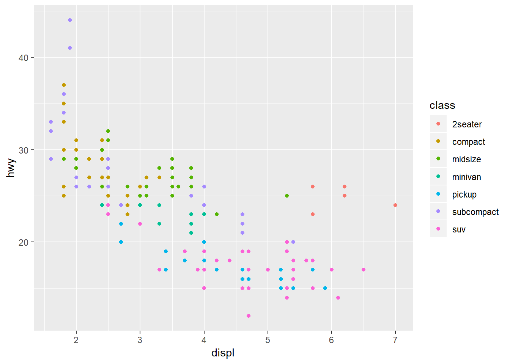
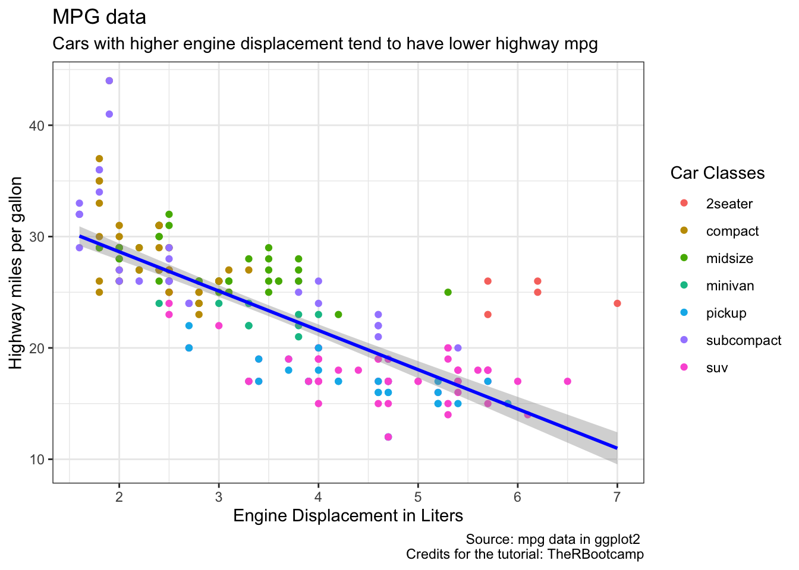
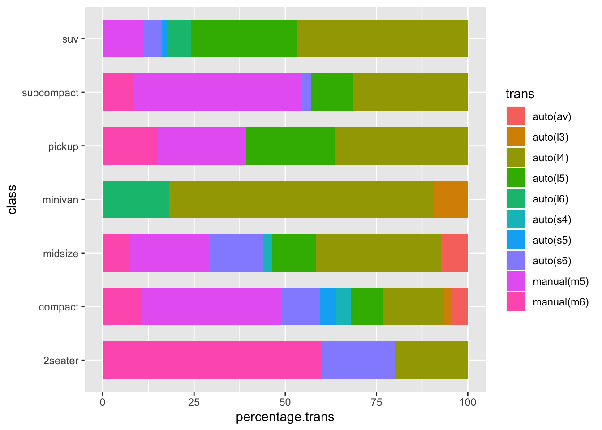

Data Viz
Download the script here.
1 Intro
In this tutorial, we will learn how to produce this graph.
## Warning in as.POSIXlt.POSIXct(Sys.time()): unknown timezone 'zone/tz/2019c.
## 1.0/zoneinfo/Europe/Berlin'Actually, it only takes 12 lines of code (of which 5 are only related to the text captions) and some pretty straight forward logic.
- To get there, we first get a glimpse into base R plotting.
- Then, we move on the much more powerful ggplot2 package (part of the tidyverse).
- We study the grammar of plotting
- step by step, we will replicate the graph above (but with some lengthy digressions to learn about different ggplot options in-between.
This site heavily builds upon The R Bootcamp who employ the widely used mpg dataset and the accompanying coding instructions (see for example (see for example R for Data Science) for their data visualization tutorial.
2 Packages and script set-up
But before we start, as always - clean the environment and load packages. First thing. Always.
rm(list = ls())
library(tidyverse) # We will now be using ggplot2 which is part of the tidyverse3 Base R Plotting
Base R has several functions for data visualization. Crucially, you need separate functions for each type of plot. Some examples:
hist(x=mpg$displ)boxplot(displ~year,
data=mpg)plot(x=mpg$displ,
y=mpg$hwy)
3.1 Disadvantages of Base R
- Pretty outdated looking plots
- Requires a lot of code and not very flexible
- Plot objects cannot be stored and modified in a tidy way
Solution: ggplot2
4 The grammar of graphics in ggplot2
| Aesthetics | Description | Code |
|---|---|---|
| Data | Which data do we want to use | ggplot(data=) |
| Relationship | Which relationship do we want to display (axes, color, ) color, size, shape, etc. | ggplot(data=df, mapping = aes(x= , y = , color= , size= , shape= )) |
| Geometric Objects | How (e.g. in which form) do we want to see the relationships in our data (histogram, points, etc…) | ggplot(data=df, mapping = aes(x= , y = , color= , size= )) + geom_XX() |
| Additional stuff | Some additional functions to adjust scales, labels, tick marks, titles | among other things +labs(), +scale() |
5 Replicating the graph
Step by step, with some digressions, we will now replicate the graph from above.
5.1 Data and Relationship
Select the data (mpg) and attach displ (the engine displacement) to the x axis, hwy (Highway miles per gallon) for the y axis and the class (car class) as the color variable.
ggplot(data = mpg,
mapping = aes(x = displ,
y = hwy,
color = class))Well, we don’t see much. The reason is that we have only specified the data and the relationship, so far. But we have not told ggplot, which kinds of objects it should plot.
5.2 Geometric objects
ggplot(data = mpg,
mapping = aes(x = displ,
y = hwy,
color = class))+
geom_point()
5.2.1 Practice with different geoms
Now, it is up to you.
Task Reproduce the following plots!
Follow the instructions about the mapping and the type of geom below each plot.
5.2.1.1 Boxplot
- Change the Axis as displayed in the plot. Use no color variable.
- Use the
geom_boxplot()function
5.2.1.2 Violin Plot
- Change the Axis as displayed in the plot. Use no color variable.
- Use the
geom_violin()function
5.2.1.3 Density Plot a)
- Change the Axis as displayed in the plot (keep only x axis). Use no color variable.
- Use the
geom_density()function.
5.2.1.4 Histogram
- Can you imagine how to plot the histogram?
5.2.1.5 Bar Plot
- Change the Axis as displayed in the plot (keep only x axis). Use no color variable.
- Use the
geom_bar()function.
5.2.1.6 Number of observations per location
- Change the Axis as displayed in the plot. Use no color variable.
- Use the
geom_count()function. - Can you tell the difference to
geom_point()?
5.3 Additional Stuff
Back to business. Let’s continue working on our replication.
5.3.1 Smoothed regression line
A smoothed regression line (standard OLS) can be added by adding geom_smooth(). Choose method = "lm" for standard OLS.
ggplot(data = mpg,
mapping = aes(x = displ,
y = hwy,
color = class))+
geom_point()+
geom_smooth(color = "blue",
method = "lm")5.3.2 Labels
This is largely self-explanatory.
ggplot(data = mpg,
mapping = aes(x = displ,
y = hwy,
color = class)) +
geom_point() +
geom_smooth(col = "blue",
method = "lm")+
labs(x = "Engine Displacement in Liters",
y = "Highway miles per gallon",
title = "MPG data",
subtitle = "Cars with higher engine displacement tend to have lower highway mpg",
caption = "Source: mpg data in ggplot2 \n Credits for the tutorial: TheRBootcamp",
color = "Car Classes")5.3.3 Themes
We can modify the theme - the non-data components, e.g. (besides titles and labels) fonts, background, gridlines, and legends - as much as we would like to with theme().
Further below we will explain how to build this beautiful graph:
5.3.3.1 Serious themes
While you can adjust the theme as much as you want, the lazy but safer (e.g. plot designs which are deemed acceptable by more people than just yourself), you can rely on the large set of predesigned themes from ggplot2. Additionally, you can also make use of the ggthemes package, which offers even more themes.
ggplot(data = mpg,
mapping = aes(x = displ,
y = hwy,
color = class)) +
geom_point() +
geom_smooth(col = "blue",
method = "lm")+
labs(x = "Engine Displacement in Liters",
y = "Highway miles per gallon",
title = "MPG data",
subtitle = "Cars with higher engine displacement tend to have lower highway mpg",
caption = "Source: mpg data in ggplot2 \n Credits for the tutorial: TheRBootcamp",
color = "Car Classes")+
theme_classic()There are many more themes (for example, theme_grey, theme_void, theme_dark, theme_minimal)
5.3.3.2 Themes from ggthemes
With the ggthemes packages, you have even more themes at hand:
library(ggthemes)
ggplot(data = mpg,
mapping = aes(x = displ,
y = hwy,
color = class)) +
geom_point() +
geom_smooth(col = "blue",
method = "lm")+
labs(x = "Engine Displacement in Liters",
y = "Highway miles per gallon",
title = "MPG data",
subtitle = "Cars with higher engine displacement tend to have lower highway mpg",
caption = "Source: mpg data in ggplot2 \n Credits for the tutorial: TheRBootcamp",
color = "Car Classes")+
theme_fivethirtyeight()Other themes from the ggthemes package include theme_economist (The Economist style graphs), theme_stata() (for those who miss Stata), or theme_tufte(). It has also a cool functionality for creating color scales for color blind people.
5.4 Finish
… This still doesn’t look like the plot we wanted to create. Actually, the plot from above was build with the theme_bw()
ggplot(data = mpg,
mapping = aes(x = displ,
y = hwy,
color = class)) +
geom_point() +
geom_smooth(col = "blue",
method = "lm")+
labs(x = "Engine Displacement in Liters",
y = "Highway miles per gallon",
title = "MPG data",
subtitle = "Cars with higher engine displacement tend to have lower highway mpg",
caption = "Source: mpg data in ggplot2 \n Credits for the tutorial: TheRBootcamp",
color = "Car Classes")+
theme_bw()
6 Minor Addenda
6.1 Saving a ggplot object in the environment
Just to mention this, you can save a ggplot object in the environment like everything else (remember, everything in R is an object).
Storing our final plot from above as final_plot
final_plot <- ggplot(data = mpg,
mapping = aes(x = displ,
y = hwy,
color = class)) +
geom_point() +
geom_smooth(col = "blue",
method = "lm")+
labs(x = "Engine Displacement in Liters",
y = "Highway miles per gallon",
title = "MPG data",
subtitle = "Cars with higher engine displacement tend to have lower highway mpg",
caption = "Source: mpg data in ggplot2 \n Credits for the tutorial: TheRBootcamp",
color = "Car Classes")+
theme_bw()We can then add stuff to the ggplot object in the usual way.
Suppose, we want to add a fat vertical line (x=3) again:
final_plot+
geom_vline(xintercept = 3, size=5)
6.2 Integrating ggplot with other tidyverse functions
GGplot, being part of the tidyverse, can be perfectly integrated with other functions of the tidyverse.
As an easy example, suppose, we only want to keep hwy values above 25:
library(tidyverse)## Warning: package 'tidyverse' was built under R version 3.4.2## ── Attaching packages ──────────────────────── tidyverse 1.2.1 ──## ✔ tibble 2.1.3 ✔ purrr 0.3.2
## ✔ tidyr 1.0.0 ✔ dplyr 0.8.3
## ✔ readr 1.3.1 ✔ stringr 1.4.0
## ✔ tibble 2.1.3 ✔ forcats 0.4.0## Warning: package 'readr' was built under R version 3.4.4## Warning: package 'purrr' was built under R version 3.4.4## Warning: package 'stringr' was built under R version 3.4.4## Warning: package 'forcats' was built under R version 3.4.4## ── Conflicts ─────────────────────────── tidyverse_conflicts() ──
## ✖ dplyr::filter() masks stats::filter()
## ✖ dplyr::lag() masks stats::lag()mpg %>%
filter(hwy>=25)%>%
ggplot( # do not call data=mpg again here!
mapping = aes(x = displ,
y = hwy,
color = class)) +
geom_point() +
geom_smooth(col = "blue",
method = "lm")+
labs(x = "Engine Displacement in Liters",
y = "Highway miles per gallon",
title = "MPG data",
subtitle = "Cars with higher engine displacement tend to have lower highway mpg",
caption = "Source: mpg data in ggplot2 \n Credits for the tutorial: TheRBootcamp",
color = "Car Classes")+
theme_bw()6.3 ggsave
You can print a ggplot object with ggsave. For this, we use the plot object final_plot which we created above.
ggsave(plot = final_plot,
file= "FILEDIRECTORYtoSAVEto.png")7 Addenda II
Below, find information on how to create a Likert scale type of graph and the basics on how to create an individual theme.
7.1 Likert scale
Let’s create fake Likert scale data. Let’s pretend that the different types of transmissions are the levels of a Likert scale and that car classes are the Likert items.
Before we can plot this fake Likert scale, we have to do some data transformation:
mpg2 <- mpg %>%
group_by(class) %>%
mutate(length.class = n()) %>%
group_by(trans, add = TRUE) %>%
mutate(length.trans = n(),
percentage.trans = 100 * length.trans / length.class) %>%
distinct(trans, class, .keep_all = TRUE)ggplot(data = mpg2,
mapping = aes(x = class,
y = percentage.trans,
fill=trans)) +
geom_bar(stat="identity", width = 0.7)+
coord_flip()
- Use class as x-axis and percentage.trans as y axis. fill=trans (different color for different trans levels)
- Use the
geom_bar()function.- use stat=“identity” to indicate that the height of the bars should represent values in the data (default is stat = “bin” which simply counts the number of occurrences of the x aesthetic)
- use widht = 0.7 to reduce the bar widht a bit
- Use
+coord_flip()?
7.2 Playing with themes
As indicated above, here is an example of a manually (ridiculously) adjusted theme.
Some random ideas for the theme (through the function theme'():
- Set background color to pink:
panel.background = element_rect(fill = "pink") - Change color of horizontal gridlines to green:
panel.grid.major.y = element_line(colour = "green"), panel.grid.minor.y = element_line(colour = "green") - Move the legend to the bottom:
legend.position = "bottom" - Add a box around the plot:
panel.border = element_rect(color="orange", fill = NA, size=5)
Additionally, outside of theme, we also want to add even more beautiful stuff:
- add a fat vertical line at 3:
+geom_vline(xintercept = 3, size=5) - Add ticks for every 0.5 on the x-axis:
+scale_x_continuous(breaks = seq(1,8, by=0.5)
Task Reproduce the plot below and follow the instructions from above!